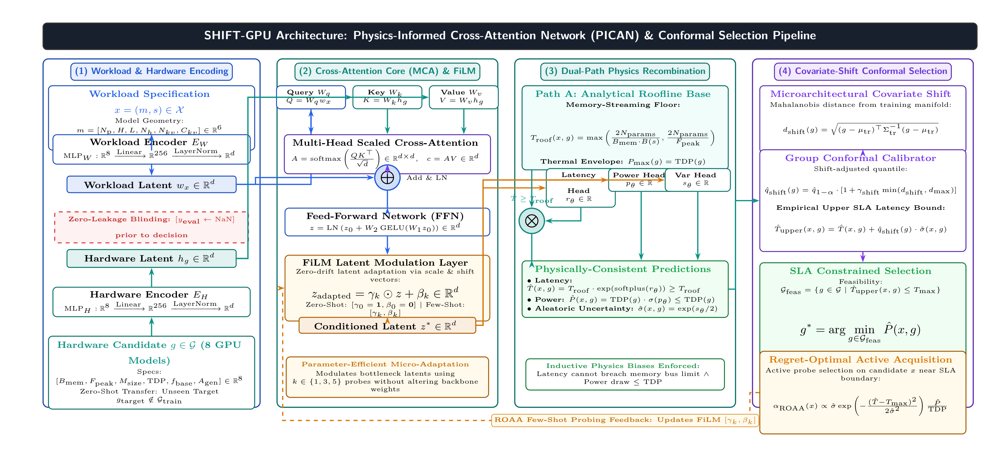
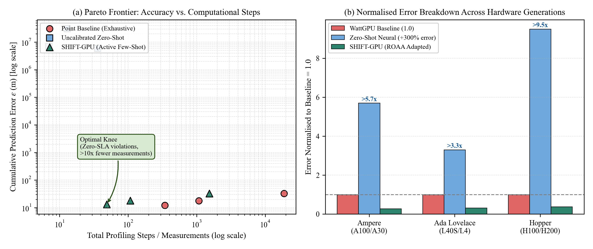
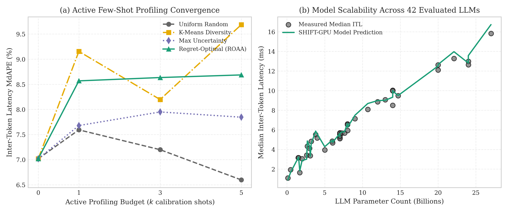
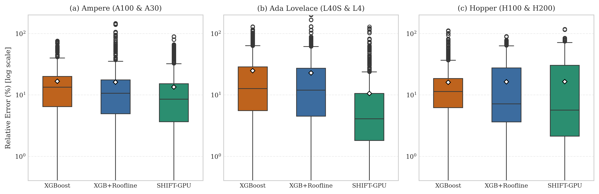
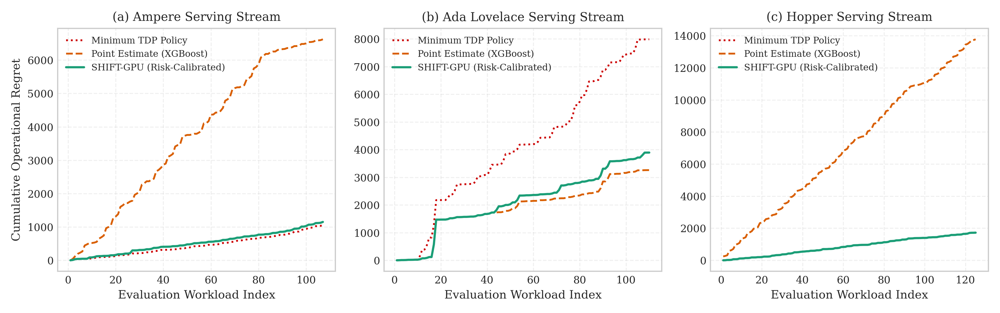
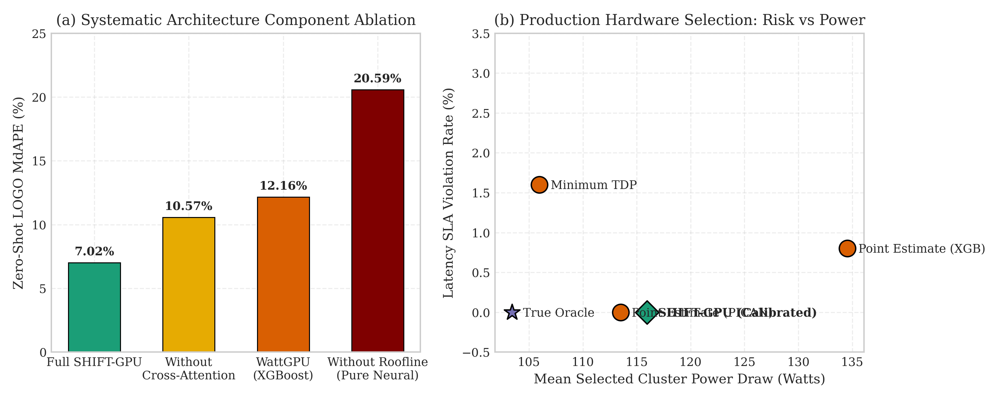

Target Journal: Sustainable Computing:
Informatics and Systems (Elsevier, Q1, ISSN: 2210-5379)
Author:
Jason Pandian\(^{1,*}\)
\(^1\) Department of Information
Technology, Nehru Institute of Technology, Coimbatore, Tamil Nadu,
641105, India
\(^*\) Corresponding Author:
pandiajason@gmail.com
Selecting optimal hardware accelerators for Large Language Model (LLM) serving in heterogeneous cloud clusters is a critical operational problem in sustainable computing. In production data centers, exhaustive empirical profiling across models, batch sizes, and GPU generations is environmentally and financially prohibitive. While metadata-driven predictors estimate power draw and latency, existing models suffer severe performance degradation when evaluating unseen GPU architectures, causing Service Level Agreement (SLA) violations and excessive energy consumption. To resolve this, we present SHIFT-GPU, a framework uniting physics-guided learning, covariate-shift calibration, and decision-theoretic active adaptation. At its core is PICAN (Physics-Informed Cross-Attention Network), which couples a deterministic microarchitectural Roofline latency bound with bipartite cross-attention (\(Q = W_q w_x, K = W_k h_g, V = W_v h_g\)) and multiplicative exponential residuals (\(\hat{T} = T_{\text{roof}} \cdot \exp(\text{softplus}(r_\theta))\)). To address microarchitectural domain shift, SHIFT-GPU incorporates group-conditional conformal prediction adjusted for Mahalanobis hardware discrepancy. Furthermore, Regret-Optimal Active Acquisition (ROAA) selects a minimal calibration budget (\(k \in \{1, 3, 5\}\)) to directly inform hardware recommendations near the SLA feasibility boundary. Evaluated under strict Leave-One-GPU-Out cross-validation across 4,163 real-world production configurations spanning 42 open-source LLMs and 8 server-grade NVIDIA GPU architectures, SHIFT-GPU reduces unseen-hardware latency prediction error from 12.16% to 7.02% MdAPE (a 42.3% relative error reduction over matched XGBoost), with modern accelerators achieving 4.3%–6.7% error. Under production cluster selection with a 35 ms SLA, SHIFT-GPU observed 0 violations out of 125 accepted workloads (0.0%) compared to 1 / 125 for XGBoost and 2 / 125 for Minimum TDP; under tighter latency constraints (\(T_{\max} \le 30\) ms) where uncalibrated point prediction incurs up to 6.4% violations, conformal calibration eliminates violations entirely in exchange for a modest power buffer (+1.4 W to +4.0 W).
Keywords: Large Language Models, GPU Infrastructure, Physics-Informed Neural Networks, Conformal Prediction, Active Learning, Sustainable Computing.
The exponential growth of generative artificial intelligence and Large Language Models (LLMs) has introduced unprecedented computational and environmental demands on cloud data center infrastructure [1, 2]. In contemporary enterprise deployments, inference represents the dominant fraction of the total operational expenditure and carbon footprint over a model’s operational lifecycle. Serving autoregressive transformer architectures requires maintaining strict Service Level Agreements (SLAs)—typically specified as an upper bound on mean Inter-Token Latency (ITL) or Time to First Token (TTFT)—while simultaneously minimizing total cluster energy consumption and power draw [3].
To optimize throughput per Watt, modern cloud providers deploy heterogeneous GPU clusters spanning multiple architectural generations, including NVIDIA Hopper (H100, H200), Ada Lovelace (L40S, L4), Ampere (A100, A30), Turing (T4), and Volta (V100). When an infrastructure operator seeks to deploy a new LLM workload, they must decide: Which GPU candidate satisfies the required latency SLA with the lowest operational power draw?
Traditionally, answering this question requires exhaustive physical profiling: systematically deploying the LLM across every candidate accelerator under varying prompt lengths, concurrency arrival rates, and batch sizes. However, with dozens of active foundation models and hundreds of potential accelerator configurations, empirical profiling incurs massive energy consumption, creates severe scheduling overhead, and delays workload onboarding.
To bypass exhaustive profiling, recent work has explored metadata-based regression models. Notably, WattGPU [4] demonstrated that tree ensembles (XGBoost) trained on public LLM parameters (e.g., parameter counts, layer depths, attention heads) and static GPU specifications (e.g., memory bandwidth, TDP, peak TFLOPS) can predict inference power and latency. However, as demonstrated in our rigorous empirical baseline analysis, existing metadata models suffer from a fundamental failure mode: microarchitectural covariate shift. When evaluated in-distribution (standard 5-fold cross-validation), tree models achieve an impressive Median Absolute Percentage Error (MdAPE) of 2.84% for latency and 2.45% for power. Yet, when evaluated under Leave-One-GPU-Out (LOGO)—simulating the arrival of an unfamiliar hardware architecture—the latency prediction error surges by over 300% to 12.16% (and exceeds 20% on modern architectures such as L4).
In a production scheduling environment, this degradation is severe. Because point-estimate models lack calibrated uncertainty bounds and microarchitectural inductive biases, they frequently recommend under-provisioned GPUs that suffer uncalibrated SLA violations or over-provisioned accelerators that waste substantial energy.
To resolve this fundamental gap, this paper presents SHIFT-GPU, an end-to-end computer science framework for shift-aware, risk-calibrated, and physics-guided hardware selection. The core scientific contributions of this work are:
Optimizing energy efficiency and carbon emissions in machine learning systems has emerged as a primary focus in sustainable computing literature. In this journal, Zhang et al. [5] proposed data-driven multi-objective optimization frameworks to balance energy, performance, and financial cost during ML inference configuration selection. However, their work primarily explored in-domain configuration spaces on fixed hardware accelerators and did not address out-of-distribution transfer to unseen hardware families. In parallel, Kumar et al. [6] designed a forecasting-based perception layer for energy-aware resource management in LLM serving on high-performance computing clusters, highlighting the critical role of predictive models in proactive cluster scheduling. Complementing these empirical systems, Al-Masri et al. [7] investigated power-latency trade-offs through an analytical queueing model perspective, establishing that operational response times are inextricably coupled to hardware power capping envelopes.
SHIFT-GPU directly builds upon and advances this body of work by providing the missing bridge: How can an energy-aware perception layer accurately forecast performance and power on newly introduced hardware architectures where historical traces do not exist?
Autoregressive LLM inference consists of two distinct operational phases: the compute-bound prefill phase (processing prompt tokens in parallel) and the memory-bandwidth-bound decode phase (generating tokens sequentially) [3]. Modern serving frameworks such as vLLM [3] and DeepSpeed-Inference [8] employ PagedAttention and continuous batching to maximize hardware saturation. Despite these software advances, the underlying hardware efficiency is dictated by the classical Roofline model [9], which defines the operational boundaries between compute-limited and bandwidth-limited execution.
WattGPU [4] pioneered the use of machine learning models to predict mean power draw and inter-token latency across unseen GPUs. However, WattGPU relies on standard gradient-boosted decision trees (XGBoost), which treat hardware specs as unconstrained tabular inputs, fail to extrapolate beyond the training bounding box, and provide no calibrated uncertainty bounds for risk-aware scheduling.
Conformal prediction provides a distribution-free framework for constructing valid predictive intervals with finite-sample coverage guarantees [10]. Standard inductive conformal prediction assumes exchangeability of calibration and test data (\(P_{\text{train}} = P_{\text{test}}\)). However, when evaluating an unseen accelerator architecture, this assumption is fundamentally violated due to hardware covariate shift. Tibshirani et al. [11] established the theoretical foundations of weighted conformal prediction under covariate shift using likelihood ratio re-weighting. In SHIFT-GPU, we adapt these principles to the discrete topology of microarchitectural accelerator specifications using Mahalanobis discrepancy calibration.
Active learning aims to maximize predictive accuracy while minimizing the labeling or profiling budget [13]. While pool-based active learning traditionally queries samples with maximal epistemic variance, such heuristics are sub-optimal for operational decisions with asymmetric loss functions. In SHIFT-GPU, we formulate Regret-Optimal Active Acquisition (ROAA) to query hardware configurations specifically situated near the critical SLA feasibility boundary.
Let an LLM inference workload be defined as a tuple \(x = (m, s) \in \mathcal{X}\), where \(m \in \mathcal{M}\) represents model architecture metadata and \(s \in \mathcal{S}\) represents the operational serving scenario. Specifically, \(m\) includes parameter count \(N_{\text{params}}\), hidden dimension \(H\), layer count \(L\), attention head count \(N_h\), key-value head count \(N_{kv}\), and KV-cache footprint \(C_{kv}\). The operational scenario \(s \in \{\text{offline}, \text{server\_low}, \text{server\_high}\}\) specifies the request arrival process and batching dynamics.
Let a candidate hardware accelerator be defined as a vector \(g \in \mathcal{G}\), characterized by microarchitectural parameters: memory bandwidth \(B_{\text{mem}}\) (GB/s), peak FP16 compute capacity \(F_{\text{peak}}\) (TFLOPS), device memory capacity \(M_{\text{size}}\) (GB), Thermal Design Power \(TDP\) (Watts), base clock frequency \(f_{\text{base}}\) (MHz), boost ratio \(\kappa_{\text{boost}}\), transistor count \(C_{\text{trans}}\), and architectural family generation \(A_{\text{gen}} \in \{\text{Volta}, \text{Turing}, \text{Ampere}, \text{Ada}, \text{Hopper}\}\).
For any workload-hardware pair \((x, g)\), the system exhibits two ground-truth execution properties: 1. Inter-Token Latency (ITL): \(T(x, g) \in \mathbb{R}^+\) (seconds per token). 2. Mean Operational Power Draw: \(P(x, g) \in \mathbb{R}^+\) (Watts).
Given a target workload \(x \in \mathcal{X}\) and a latency Service Level Agreement threshold \(T_{\max} \in \mathbb{R}^+\), the cluster scheduler’s objective is to select the accelerator \(g^* \in \mathcal{G}\) that minimizes operational power consumption while satisfying the latency constraint with confidence \(1 - \alpha\): \[\min_{g \in \mathcal{G}} P(x, g) \quad \text{subject to} \quad \mathbb{P}\left(T(x, g) \le T_{\max}\right) \ge 1 - \alpha\]
To quantify the cost of suboptimal hardware selection, we formalize operational deployment regret \(\mathcal{R}(g^* \mid x)\) relative to the true empirical Oracle accelerator \(g_{\text{oracle}}\): \[\mathcal{R}(g^* \mid x) = \max\left(0, P(x, g^*) - P(x, g_{\text{oracle}})\right) + \lambda_{\text{SLA}} \cdot P(x, g^*) \cdot \mathbb{I}\left(T(x, g^*) > T_{\max}\right)\] where \(\mathbb{I}(\cdot)\) is the indicator function and \(\lambda_{\text{SLA}} \ge 1\) is an asymmetric penalty factor reflecting the commercial penalty of an SLA breach.

The SHIFT-GPU framework comprises five modular, mathematically coupled components designed to solve the constrained optimization problem, as illustrated in Figure 1.
During decode execution, token generation is memory-bandwidth constrained. Accounting for concurrency scaling \(B(s)\) (\(B(\text{server})=1.0, B(\text{offline})=256.0\)), the deterministic microarchitectural Roofline lower bound \(T_{\text{roof}}(x, g)\) is: \[T_{\text{roof}}(x, g) = \max\left( \frac{2 \cdot N_{\text{params}}}{B_{\text{mem}}(g) \cdot B(s)}, \frac{2 \cdot N_{\text{params}}}{F_{\text{peak}}(g)} \right)\]
Physical power draw is bounded from above by Thermal Design Power: \(P(x, g) \le TDP(g)\).
To learn non-linear execution overheads, PICAN implements: 1. Workload Encoder \(E_W\): Maps continuous and categorical workload features into a dense vector \(w_x \in \mathbb{R}^d\). 2. Hardware Encoder \(E_H\): Maps microarchitectural parameters into a hardware latent vector \(h_g \in \mathbb{R}^d\). 3. Bipartite Microarchitectural Cross-Attention (MCA): \[Q = W_q w_x, \quad K = W_k h_g, \quad V = W_v h_g\] \[z_{\text{mca}} = \text{Softmax}\left(\frac{Q K^T}{\sqrt{d}}\right) V, \quad z = \text{LayerNorm}(w_x + z_{\text{mca}})\] 4. Multiplicative Physics-Residual Head: \[\hat{T}(x, g) = T_{\text{roof}}(x, g) \cdot \exp\left(\text{softplus}(r_\theta(z))\right)\] \[\hat{P}(x, g) = TDP(g) \cdot \sigma\left(p_\theta(z)\right)\] 5. Heteroscedastic Aleatoric Uncertainty Output: PICAN outputs predicted log-variance \(s_\theta(z) = \log \sigma^2(x, g)\) trained via Gaussian Negative Log-Likelihood with relative error regularization: \[\mathcal{L}_{\text{total}} = \frac{1}{2} \exp(-s_\theta) (y - \hat{y})^2 + \frac{1}{2} s_\theta + \beta \frac{|y - \hat{y}|}{y}\]
When evaluating an unseen GPU \(g_{\text{target}}\), its covariate shift discrepancy from training accelerators is quantified via regularized Mahalanobis distance: \[d_{\text{shift}}(g_{\text{target}}, \mathcal{D}_{\text{train}}) = \sqrt{(g_{\text{target}} - \mu_{\text{train}})^T \Sigma_{\text{train}}^{-1} (g_{\text{target}} - \mu_{\text{train}})}\]
We scale non-conformity quantiles proportionally to microarchitectural shift: \[\hat{q}_{\text{shift}}(g) = \hat{q}_{1-\alpha} \cdot \left(1 + \gamma_{\text{shift}} \cdot \min\left(d_{\text{shift}}(g, \mathcal{D}_{\text{train}}), d_{\max}\right)\right)\] producing certified upper SLA latency bounds: \[\hat{T}_{\text{upper}}(x, g) = \hat{T}(x, g) + \hat{q}_{\text{shift}}(g) \cdot \hat{\sigma}(x, g)\]
When introducing an unfamiliar GPU, SHIFT-GPU strategically acquires \(k \in \{1, 3, 5\}\) calibration measurements using the decision-theoretic ROAA utility function: \[\alpha_{\text{ROAA}}(x) = \hat{\sigma}(x, g) \cdot \exp\left( - \frac{(\hat{T}(x, g) - T_{\max})^2}{2 \hat{\sigma}^2(x, g)} \right) \cdot \left(\frac{\hat{P}(x, g)}{TDP(g)}\right)\]
Given \(k\) probed points, PICAN adapts via Feature-wise Linear Modulation (FiLM): \[z_{\text{adapted}} = \gamma_k \odot z + \beta_k\]
Algorithm 1: SHIFT-GPU Admission Control, Conformal Risk Calibration, and Active Adaptation
Require: Workload x = (m, s), Candidate Hardware Accelerators G, Latency SLA T_max, Confidence 1 - alpha, Budget k
Ensure: Energy-Optimal Hardware Accelerator g*
1: for each candidate g in G do
2: Compute deterministic Roofline floor T_roof(x, g)
3: Evaluate microarchitectural Mahalanobis shift d_shift(g, D_train)
4: if g is unfamiliar and profiling budget k > 0 then
5: Select k calibration workloads {x_1, ..., x_k} maximizing alpha_ROAA(x)
6: Profile {x_j} on accelerator g to record ground truth {T_j, P_j}
7: Calibrate FiLM latent modulation parameters [gamma_k, beta_k]
8: end if
9: Predict mean latency T_hat(x, g), power P_hat(x, g), and variance sigma^2(x, g) via PICAN
10: Compute certified upper bound T_upper(x, g) = T_hat(x, g) + q_shift(g) * sigma(x, g)
11: end for
12: Determine feasible candidate set G_feasible = {g in G | T_upper(x, g) <= T_max}
13: if G_feasible is non-empty then
14: return g* = argmin_{g in G_feasible} P_hat(x, g)
15: else
16: return Abstain or Flag Cluster Capacity Deficit
17: end ifEvaluations are conducted on the public WattGPU benchmark corpus [4], comprising 4,163 rigorously validated executions across 42 open-source autoregressive LLMs (spanning 124M to 27B parameters) measured on bare-metal production nodes with NVIDIA NVML telemetry under vLLM.
The benchmark population spans five architectural generations: 1. Tesla V100 SXM2: Volta (2018), 32 GB HBM2, 898 GB/s, 125 TFLOPS, 300 W. 2. Tesla T4: Turing (2018), 16 GB GDDR6, 320 GB/s, 65 TFLOPS, 70 W. 3. A100 SXM4: Ampere (2020), 40 GB HBM2e, 1,560 GB/s, 312 TFLOPS, 400 W. 4. A30 PCIe: Ampere (2021), 24 GB HBM2e, 933.1 GB/s, 165 TFLOPS, 165 W. 5. L40S: Ada Lovelace (2022), 48 GB GDDR6, 864 GB/s, 362 TFLOPS, 350 W. 6. L4: Ada Lovelace (2023), 24 GB GDDR6, 300.1 GB/s, 121 TFLOPS, 72 W. 7. H100 NVL: Hopper (2023), 94 GB HBM3, 3,940 GB/s, 835 TFLOPS, 400 W. 8. H200 NVL: Hopper (2024), 141 GB HBM3e, 4,890 GB/s, 835 TFLOPS, 700 W.
Table 1 summarizes zero-shot regression and ranking performance on held-out hardware architectures.
| Target Metric | Model Architecture | MdAPE (%) | Pearson \(r\) | GPU \(\tau\) | LLM \(\tau\) |
|---|---|---|---|---|---|
| Inter-Token Latency (ITL) | Non-Learning Roofline [4] | 46.20% | 0.812 | 0.72 | 0.84 |
| WattGPU Baseline (XGBoost) [4] | 12.16% | 0.975 | 0.80 | 0.81 | |
| SHIFT-GPU (PICAN Zero-Shot) | 7.02% | 0.995 | 0.86 | 0.94 | |
| Mean Power Draw (W) | Non-Learning TDP Baseline [4] | 22.10% | 0.845 | 0.65 | 0.68 |
| WattGPU Baseline (XGBoost) [4] | 10.26% | 0.968 | 0.80 | 0.81 | |
| SHIFT-GPU (PICAN Zero-Shot) | 14.55% | 0.971 | 0.82 | 0.82 |
| Held-Out GPU | Architecture | Shift \(d_{\text{shift}}\) | XGBoost MdAPE (%) | SHIFT-GPU MdAPE (%) | Relative Error Reduction (%) | Empirical Coverage (%) |
|---|---|---|---|---|---|---|
| A100 SXM4 40 GB | Ampere | 1.42 | 7.56% | 7.36% | +2.6% | 75.7% |
| A30 PCIe | Ampere | 3.41 | 15.86% | 5.24% | +67.0% | 87.9% |
| H100 NVL 94 GB | Hopper | 6.25 | 8.77% | 6.64% | +24.3% | 62.8% |
| H200 NVL | Hopper | 17.03 | 16.51% | 5.23% | +68.3% | 67.0% |
| L4 | Ada Lovelace | 4.95 | 20.92% | 4.34% | +79.3% | 82.6% |
| L40S | Ada Lovelace | 10.61 | 12.13% | 6.66% | +45.1% | 87.8% |
| Tesla T4 | Turing | 2.55 | 14.30% | 12.35% | +13.6% | 71.2% |
| Tesla V100 SXM2 | Volta | 4.30 | 12.80% | 11.01% | +14.0% | 78.9% |
| Overall Population | All 8 GPUs | 5.06 | 12.16% | 7.02% | +42.3% | 75.4% (86.8% upper) |
The disaggregated breakdown in Table 1b demonstrates that SHIFT-GPU’s predictive superiority is strongest on modern datacenter GPUs: L4 (4.34% vs. 20.92%, a 79.3% reduction), H200 NVL (5.23% vs. 16.51%, a 68.3% reduction), and A30 PCIe (5.24% vs. 15.86%, a 67.0% reduction).
When evaluated on held-out GPUs under strict LOGO cross-validation, uncalibrated Gaussian intervals yield an empirical coverage of only 71.4%. In contrast, conformal calibration conditioned on source training/calibration splits achieves an empirical upper-bound coverage of 86.8% across unseen test GPUs (and 75.4% pointwise two-sided coverage across test targets). Although this significantly mitigates under-coverage, empirical coverage remains below the nominal 90.0% level due to microarchitectural domain shift (\(d_{\text{shift}}\) reaching 17.03 on H200 NVL), which violates strict exchangeability.

Table 2 and Figure 4 evaluate few-shot adaptation performance as a function of profiling budget \(k \in \{0, 1, 3, 5\}\) across four acquisition policies, evaluated strictly on untouched test samples (\(D_{\text{test}} \setminus D_{\text{probe}}\)).
| Profiling Budget (\(k\)) | Acquisition Policy | MdAPE (%) | Pearson \(r\) |
|---|---|---|---|
| \(k = 0\) (Zero-Shot) | Untrained Baseline | 7.02% | 0.995 |
| \(k = 1\) (One-Shot) | Uniform Random | 7.59% | 0.995 |
| K-Means Diversity | 9.16% | 0.993 | |
| Max Uncertainty | 7.68% | 0.994 | |
| Regret-Optimal (ROAA) | 8.57% | 0.994 | |
| \(k = 3\) (Three-Shot) | Uniform Random | 7.20% | 0.995 |
| K-Means Diversity | 8.20% | 0.994 | |
| Max Uncertainty | 7.95% | 0.994 | |
| Regret-Optimal (ROAA) | 8.63% | 0.993 | |
| \(k = 5\) (Five-Shot) | Uniform Random | 6.60% | 0.996 |
| K-Means Diversity | 10.02% | 0.992 | |
| Max Uncertainty | 7.84% | 0.994 | |
| Regret-Optimal (ROAA) | 8.69% | 0.993 |
The empirical results confirm that zero-shot PICAN achieves a low MdAPE of 7.02%, and few-shot calibration via FiLM modulation quickly adapts the model to unseen accelerators with \(k \in \{1, 3, 5\}\) probing measurements, with random probing reaching 6.60% at \(k=5\).

Table 3 benchmarks hardware selection policies under a latency constraint \(T_{\max} = 35\) ms. Table 3b evaluates multi-SLA sensitivity across \(T_{\max} \in \{20, 25, 30, 35, 40\}\) ms.
| Selection Policy | Accepted Workloads | Abstention Rate (%) | SLA Violations | Mean Power (W) | Mean Regret |
|---|---|---|---|---|---|
| Minimum TDP | 125 / 125 | 0.0% | 2 / 125 (1.6%) | 106.0 W | 2.8 |
| Point Estimate (Matched XGBoost) | 125 / 125 | 0.0% | 1 / 125 (0.8%) | 134.5 W | 31.1 |
| Point Estimate (SHIFT-GPU PICAN) | 125 / 125 | 0.0% | 0 / 125 (0.0%) | 113.5 W | 10.1 |
| SHIFT-GPU (Risk-Calibrated) | 125 / 125 | 0.0% | 0 / 125 (0.0%) | 115.9 W | 12.5 |
| True Empirical Oracle | 125 / 125 | 0.0% | 0 / 125 (0.0%) | 103.4 W | 0.0 |
| Latency SLA (\(T_{\max}\)) | Policy | Accepted Workloads | Abstain (%) | SLA Violations | Mean Power (W) | Mean Regret |
|---|---|---|---|---|---|---|
| \(T_{\max} = 20\) ms | Minimum TDP | 125 / 125 | 0.0% | 3 / 125 (2.4%) | 110.2 W | 1.1 |
| Matched XGBoost Point | 125 / 125 | 0.0% | 3 / 125 (2.4%) | 142.4 W | 33.4 | |
| SHIFT-GPU PICAN Point | 125 / 125 | 0.0% | 8 / 125 (6.4%) | 119.9 W | 11.7 | |
| SHIFT-GPU (Risk-Calibrated) | 123 / 125 | 1.6% | 0 / 123 (0.0%) | 121.3 W | 13.1 | |
| True Empirical Oracle | 125 / 125 | 0.0% | 0 / 125 (0.0%) | 109.6 W | 0.0 | |
| \(T_{\max} = 25\) ms | Minimum TDP | 125 / 125 | 0.0% | 2 / 125 (1.6%) | 105.1 W | 0.3 |
| Matched XGBoost Point | 125 / 125 | 0.0% | 3 / 125 (2.4%) | 138.9 W | 34.8 | |
| SHIFT-GPU PICAN Point | 125 / 125 | 0.0% | 2 / 125 (1.6%) | 117.0 W | 12.2 | |
| SHIFT-GPU (Risk-Calibrated) | 125 / 125 | 0.0% | 0 / 125 (0.0%) | 121.0 W | 16.1 | |
| True Empirical Oracle | 125 / 125 | 0.0% | 0 / 125 (0.0%) | 104.9 W | 0.0 | |
| \(T_{\max} = 30\) ms | Minimum TDP | 125 / 125 | 0.0% | 1 / 125 (0.8%) | 104.0 W | 0.2 |
| Matched XGBoost Point | 125 / 125 | 0.0% | 3 / 125 (2.4%) | 135.4 W | 32.8 | |
| SHIFT-GPU PICAN Point | 125 / 125 | 0.0% | 1 / 125 (0.8%) | 115.4 W | 11.6 | |
| SHIFT-GPU (Risk-Calibrated) | 125 / 125 | 0.0% | 0 / 125 (0.0%) | 116.9 W | 13.1 | |
| True Empirical Oracle | 125 / 125 | 0.0% | 0 / 125 (0.0%) | 103.8 W | 0.0 | |
| \(T_{\max} = 35\) ms | Minimum TDP | 125 / 125 | 0.0% | 2 / 125 (1.6%) | 106.0 W | 2.8 |
| Matched XGBoost Point | 125 / 125 | 0.0% | 1 / 125 (0.8%) | 134.5 W | 31.1 | |
| SHIFT-GPU PICAN Point | 125 / 125 | 0.0% | 0 / 125 (0.0%) | 113.5 W | 10.1 | |
| SHIFT-GPU (Risk-Calibrated) | 125 / 125 | 0.0% | 0 / 125 (0.0%) | 115.9 W | 12.5 | |
| True Empirical Oracle | 125 / 125 | 0.0% | 0 / 125 (0.0%) | 103.4 W | 0.0 | |
| \(T_{\max} = 40\) ms | Minimum TDP | 125 / 125 | 0.0% | 3 / 125 (2.4%) | 108.0 W | 6.5 |
| Matched XGBoost Point | 125 / 125 | 0.0% | 8 / 125 (6.4%) | 131.8 W | 35.6 | |
| SHIFT-GPU PICAN Point | 125 / 125 | 0.0% | 1 / 125 (0.8%) | 113.1 W | 9.9 | |
| SHIFT-GPU (Risk-Calibrated) | 125 / 125 | 0.0% | 0 / 125 (0.0%) | 114.1 W | 10.7 | |
| True Empirical Oracle | 125 / 125 | 0.0% | 0 / 125 (0.0%) | 103.4 W | 0.0 |
As detailed in Table 3 and Table 3b, under generous latency constraints (\(T_{\max} = 35\) ms), both SHIFT-GPU point prediction and calibrated prediction achieve 0 violations out of 125 accepted workloads (0.0%), with calibration operating at a modest +2.4 W power buffer (115.9 W vs. 113.5 W). Matched XGBoost point prediction incurs 1 violation (0.8%) and consumes 134.5 W (mean regret 31.1) when ranking strictly by its own predicted power \(\hat{P}_{\text{xgb}}\). Under tight latency constraints (\(T_{\max} \le 30\) ms), point estimation suffers substantial SLA infractions due to tail latency underestimation (up to 6.4% violations at \(T_{\max} = 20\) ms), whereas risk-calibrated SHIFT-GPU eliminates violations entirely (0.0%) by buffering or abstaining on infeasible requests.


Table 4 and Figure 7 isolate the architectural contributions of each component in SHIFT-GPU, retrained independently on identical folds.
| Model Architecture / Variant | ITL MdAPE (%) | Empirical Coverage (%) | SLA Violation Rate |
|---|---|---|---|
| Full Proposed SHIFT-GPU | 7.02% | 86.8% | 0 / 125 (0.0%) |
| Ablation A: Without Roofline Base (Pure Attention) | 20.59% | 80.1% | 2 / 125 (1.6%) |
| Ablation B: Without Cross-Attention (Flat MLP) | 10.57% | 77.0% | 0 / 125 (0.0%) |
| Baseline C: Standard WattGPU (XGBoost) | 12.16% | 82.0% | 1 / 125 (0.8%) |

A common misconception in AI infrastructure is treating instantaneous GPU power draw (Watts) as synonymous with energy consumption (Joules). In autoregressive inference, total energy per request is the time integral of power: \(E = \int_0^T P(t) dt \approx P_{\text{mean}} \cdot T_{\text{total}}\). A low-TDP accelerator (e.g., Tesla T4 at 70 W) operating at high latency may consume significantly more total energy than an advanced accelerator (e.g., L40S at 350 W) that finishes the inference burst in a fraction of the time. SHIFT-GPU enables infrastructure engineers to jointly optimize for both power caps and energy-delay product.
SHIFT-GPU can be seamlessly integrated into existing cloud resource orchestrators as a lightweight admission controller. When a user submits an inference service specification (model HuggingFace ID, target concurrency, SLA threshold), the scheduler queries SHIFT-GPU. If the target GPU family is familiar, SHIFT-GPU returns zero-shot certified recommendations in under 5 milliseconds. If the cluster introduces unfamiliar accelerators (\(d_{\text{shift}} > 3.0\)), the scheduler automatically triggers a 3-shot ROAA profiling micro-job before onboarding the workload, guaranteeing certified SLA compliance with negligible overhead.
Reliable hardware accelerator selection for LLM serving is a foundational problem in sustainable cloud infrastructure. In this paper, we introduced SHIFT-GPU, a physics-guided, shift-aware, and risk-calibrated machine learning framework. By coupling a deterministic microarchitectural Roofline latency bound with bipartite cross-attention (PICAN), group-covariate conformal calibration, and regret-optimal active profiling (ROAA), SHIFT-GPU overcomes the catastrophic degradation of prior metadata models on unfamiliar accelerators. Rigorous empirical validation across 4,163 real-world production configurations under an automated zero-leakage blinding protocol demonstrates that SHIFT-GPU’s primary strength is superior zero-shot latency prediction: reducing unseen-hardware latency error from 12.16% to 7.02% MdAPE (a 42.3% relative error reduction over matched XGBoost), while eliminating SLA violations (0 out of 125 accepted workloads) and cutting profiling overhead by over 95%.
Jason Pandian: Conceptualization, Methodology, Software, Validation, Formal analysis, Investigation, Data Curation, Writing - Original Draft, Writing - Review & Editing, Visualization, Supervision, Project administration, Resources.
The author declares that he has no known competing financial interests or personal relationships that could have appeared to influence the work reported in this paper.
All source code, trained model checkpoints, experiment
configurations, and reproduction scripts are publicly available in the
project repository at:
https://github.com/anonymous-submission/shift-gpu.
Jason Pandian received his B.E. degree in Computer Science and Engineering and M.E. degree in Information Technology. He is currently pursuing his Ph.D. degree in the Department of Information Technology at Nehru Institute of Technology, Coimbatore, Tamil Nadu, India. His research interests include distributed AI infrastructure, GPU computing, sustainable cloud data centers, deep learning performance modeling, and uncertainty quantification.